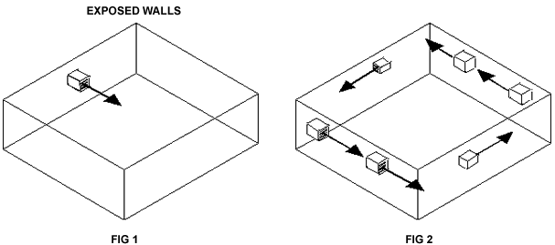
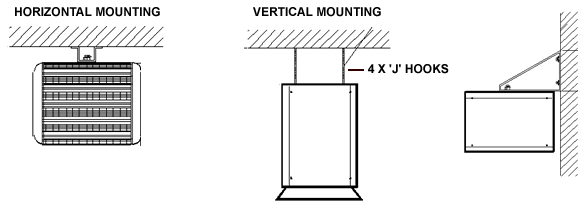

BN Thermic Instruction Sheet
OUH Blower Unit Heaters
INSTALLATION AND OPERATING INSTRUCTIONS
PACKAGING - Unpack the heater and remove all packaging material. Ensure all airways are clear. Retain the instructions for future reference.
LOCATION - For best results, do not exceed the mounting heights specified below.
MAXIMUM RECOMMENDED MOUNTING HEIGHT 2 - 10 kW 2.4m 15 - 25 kW 3.0m
Direct air flow away from occupants, posts, and columns, including equipment. Ideally parallel to the outside walls, along the most exposed part of the building, which is normally subjected to the prevailing winds.
If the heater is to be controlled by a room thermostat, locate the device on the interior wall, partition or post (insulate from cold steel posts), away from cold drafts, and any heat source including warm air directly from the heater.
Suggested fitting arrangements for optimum circulation and heat distribution. Fig. I illustrates a small room with one heater, and fig. 2 illustrates a large building with several heaters.
INSTALLATION - After the optimum heater location has been determined using the information above the heater brackets (in the case of wall mounting) should be securely fixed to the wall or ceiling using appropriate wall bolts. The minimum clearance from walls and ceilings is for 2 - 10 kW units 10cm for 15 - 25 kW units 15cm . No object should be positioned closer than 2m from the discharge grille.
For vertical mounting, mounting height can be increased by 1m and using optional 'J' hook kit suspend from the roof by chains. If this method is used the use of optional diffusers is advised.


WIRING - The wiring diagrams are on the reverse of the right hand side panel, to remove the panel use a suitable screwdriver, and slacken off the four screws and slide the side panel up. The wiring to the supply side MUST be carried out by a qualified electrician and to the relevant IEEE and any appropriate local wiring regulations.
A suitable Iph+N or 3ph+N isolator should be mounted adjacent to the
heater and the wiring to the heater must be carried out in a flexible
conduit or armoured cable. Incoming cables must be wired into the marked
terminal block live wires to L, or Ll, L2, L3 and the neutral to N. If
a remote thermostat is to be connected this should be connected to Tl
and T2. The main earth to be connected to the terminal E  .
THIS UNIT MUST BE EARTHED.
.
THIS UNIT MUST BE EARTHED.
OPERATION - The heater may be operated manually or with any switching device in the control circuit e.g. time clock etc., or a thermostat. It is also fitted with auto reset overheat protection and heat purge devices to protect the element and motor. The control circuit is separately fused and protected by a 3 amp fuse for 2 -10kW and 5 amp fuse for 15 - 25kW heaters.
CLEANING AND MAINTENANCE - This should only be carried out by skilled and qualified persons. The heater must be completely isolated from the electrical supply before any work whatsoever is started. The motor is sealed and is maintenance free - non user serviceable.
GENERAL MAINTENANCE ON ELECTRIC HEATERS
BN Thermic Electric Heaters are factory assembled and tested and are designed to operate for many years, problem free.
All moving parts are factory lubricated and should require no service.
Maintenance is limited to the keeping of both inlet and exhaust areas free from any accumulation of dust and other foreign materials. This is especially important immediately before a heating season. Any dust build-up can be loosened with a brush and a vacuum cleaner applied to the airways to ensure complete removal of dust materials. An unusual odour may be noted on the initial turn-on period as any dust particles may have been disturbed and will be burnt off from the element.
Warranty. Your BN Thermic product is guaranteed for one year from date of purchase. We will repair or replace at our discretion any part found to be defective. We cannot assume any consequential liability. This guarantee in no way prejudices your rights under common law and is offered as an addition to consumer liability rights.